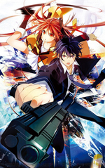

| Name | Cover | Description |
| Knights of Sidonia | It's been a thousand years since a strange alien race known as Gauna destroyed the solar system. A portion of humanity managed to escape using "seed ships" which allows them to maintain the population while drifting through space. Nagate Tanikaze is raised deep in the ship. When he goes into training to be a pilot of the huge robotic weapons known as Gardes, he is entrusted with the legendary unit known as Tsugumori. He puts his life on the line to protect the human race. | |
| Nanana's Buried Treasure | After being disowned, Jugo Yama runs away from home to the Nanae Island. He lives by himself only to discover his room is haunted by the ghost of Nanana Ryugajo. She wants to find her killer before she can rest in peace. Before her death, she had collected things from all over the world and hid them throughout the island. The items hold different powers that could be used to find the culprit. As he hunts down for the collection, he finds out he is not the only one looking for it. | |
| Escha and Logy Atelier | This world has been through many dusks and it is coming to an end. Land of Dusk is a prosperous nation thanks to alchemy. Escha uses her knowledge of ancient alchemy to help others. Logy learns the newest alchemic techniques and meets Escha when he was reassigned. The two make a promise to use their alchemy together to bring success to the Development Department. | |
| Date A Live 2 | It is the second season to Date A Live. | |
| M3: Sono kuroki Hagane | The darkness that swallows everything becomes known as the Avidya Zone. Strange beings assume the very form of the despair of humanity. They are known as Imashime. Can eight boys and girls assembled to confront the Imashime, find the bright future that lies before the Avidya Zone? | |
| Hanamonogatari | It is a continuation of Monogatari Season 2 which follows up what happens to Araragi after he graduates from high school. | |
| Black Bullet |  | Mankind was defeated by Gastrea, a parasitical virus and is forced to live within a wall made of Varanium Monoliths. Soon after, children born are able to control the Gastrea virus are discovered and they could only be females. Civil Securities forms to fight against Gastrea having a cursed child and a Promoter as pairs. Rentaro Satomi a promoter and his Initiator Enju Aihara receive a secret mission to prevent the destruction of Tokyo. |
| One Week Friends | Yuki Hase noticed that Kaori Fujimiya is always alone and has no friends. After approaching her, he finds out that she loses every memory of her friends each Monday. Despite learning this, Yuki endeavors to become her new friend every week. | |
| Brynhildr in the Darkness | Murakami was infatuated by a girl he called Kuroneko. She insisted on knowing about aliens and says she has met them. She decides to show him the aliens but an accident occurs and Kuroneko dies while Murakami is left seriously wounded. Years go by and Murakami obsesses with finding proof of finding aliens because of a promise he made with Kuroneko. One day a new transfer student came who looked exactly like Kuroneko and her name was Kurohaneko. She turns out to be able to predict the future. | |
| Dragonar Academy | Ansarican dragon knight academy is for people who had made contract with dragons and teaches students how to raise them. Ash Blake has a particular Seikokuon, proof of being a contractor, on his hand but he didn't have any dragons. After an incident his dragon finally hatches. However, the dragon wasn't born in dragon form but in a girl form. |
©2014 Wan Ahmad Akil Ashraf. Resources